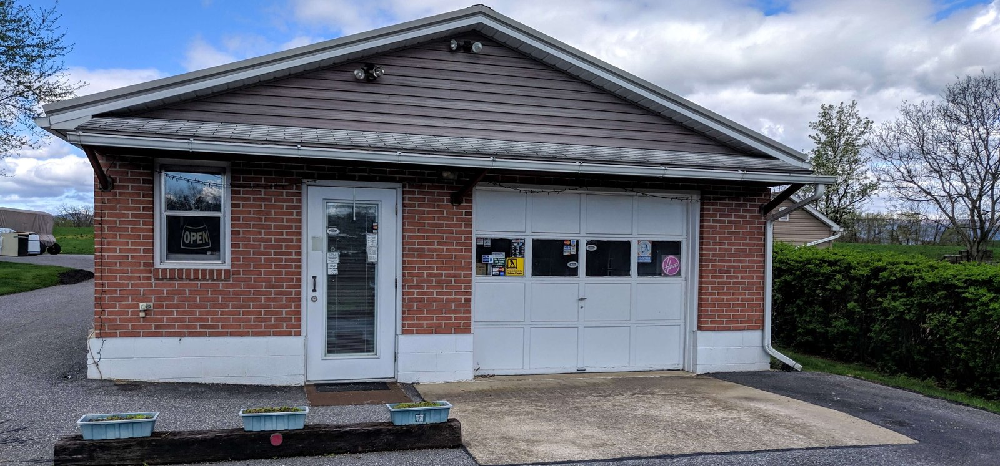
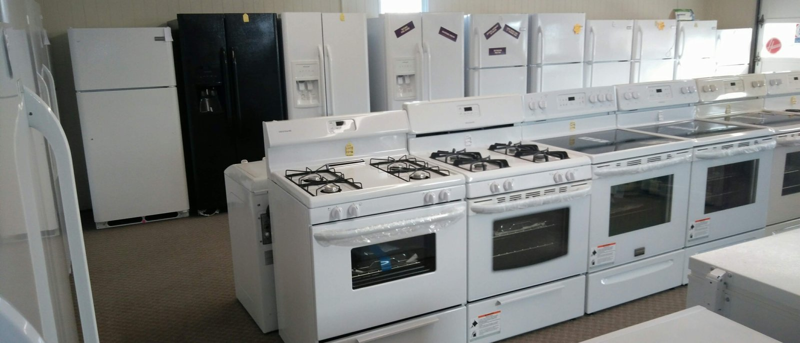

Kitchen & Laundry
Refrigerators, freezers, ranges, stoves, dishwashers, microwaves, washers, and dryers—new and inspected used.

711 Twin Bridge Road, Chambersburg, PA 17202
New and personally inspected used home appliances, replacement parts, and honest small-business service since 1985.
New & Inspected Used

We carry a wide selection of new and quality used household appliances. Every used appliance is personally inspected by Ron before it reaches the floor so you know it is in great working condition.
Looking for a specific model or a hard-to-find component? Give us a call or stop by the shop—if we don't have what you need in stock, we can most likely order it for you.
Refrigerators, freezers, ranges, stoves, dishwashers, microwaves, washers, and dryers—new and inspected used.
Air conditioners, dehumidifiers, and vacuums built to keep your home comfortable year-round.
A wide range of replacement parts for common appliances, plus special ordering when you need a specific unit.
Family-Owned Since 1985
Christman Appliances has been owned and operated by Ronald Christman since he first opened the business in 1985.
With over 55 years of hands-on appliance experience, Ron strongly values the straightforward advice and personal touch that only a local small business can provide.
711 Twin Bridge Rd • Mon – Sat
Have a question about current stock, replacement parts, or an order? We'd love to hear from you.
Located just off Twin Bridge Road in Chambersburg. Call ahead anytime to check current inventory.